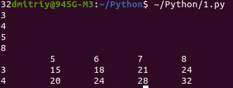

Введение в Python
Ссылки на учебники: Руководство по языку программирования PythonСамоучитель Python
Уроки по языку программирования Python
The Python Tutorial
Основы Python
Языки программирования делятся на два типа:
- Компилируемые
Специальная программа, компилятор, преобразует исходный код в машинный. Полученный в результате файл готов к исполнению без дополнительных инструментов. Примеры: C++, Colang, Rust - Интерпретируемые
Код исполняется строчка за строчкой специальной программой - интерпретатором. Исполнение возможно только при наличии этой программы. Примеры: Python, Lua, JavaScript.
Установка python на windows
Python не входит в состав операционной системы windows, поэтому его надо устанавливать. Для этого его надо скачать с официальной страницы. На этой странице рекомендуют скачать на 18.02.2025 версию python 3.13.2, но поскольку с windows7 он не работает, я скачал python 3.8.10Во время установки нужно поставить галочку напротив Add Python to PATH (Добавить Python в PATH) — это упростит правильную настройку системы. Переменная PATH — это системный параметр, который указывает операционной системе, где искать часто используемые программы.
Аналогом терминала в ubuntu в windows является программа Командная строка.
И отличий от работы в ubuntu вроде нет. Для входа в интерпретатор служит команда:
pythonЧтобы выйти из режима интерпретатора следует нажать клавиши Ctrl + z и после Enter или выполнить команду: exit.
Чтобы узнать версию установленного python, команда:
python --versionУстановка редактора
Зашёл на сайт code.visualstudio.com , там нажал на ссылку download for windows. Скачал, версия x64-1.97.2. Попробовал установить, получил сообщение, что эта версия не поддерживается моей системой.
После этого раздумал устанавливать VSCode, решил пользоваться pycharm.
Зашел на jetbrains.com/ru-ru/pycharm/download/other.html и выбрал версию PyCharm Community Edition 2018.3.7 - Windows, поскольку она является бесплатной и по отзывам последняя версия, которая поддерживается windows7.
Установил.
Чтобы в windows выполнить скрипт, в терминале входим в каталог скрипта и выполняем команду:
python name_script.py
Установка Python на linux системы (Ubuntu, Debian и другие)
Откройте консоль (обычно ctrl+alt+t). Введите в консоли:python3Если python установлен, то входим в интерпретатор.
Узнать версию python:
dmitriy@945G-M3:~$ python3 --version Python 3.8.10Если это так, то можно вас поздравить: у вас уже стоит python. В противном случае нужно установить пакет *python3*:
sudo apt install python3Чтобы выйти из интерпретатора в Ubuntu, клавиши: Ctrl + D или команда: exit
На чем писать код, редакторы
- VScode и Pycharm
для моего компьютера (ОЗУ = 2 Гб) очень тяжелые. - IDLE
В python для linux нет предустановленной среды IDLE. Если хотите, её можно установить отдельно. Пакет называется idle3 (в более ранних версиях он может называться python3-idle).
Однако, её установка не является обязательной. Вы можете писать в своём любимом текстовом редакторе (gedit, vim, emacs...) и запускать программы через консоль:
python3 path_to_file.py - Mu
Как установить на linuxКак писать на IDLE
- https://repl.it/
- Jupyter Notebook
Чтобы начать на нем работать, команда:jupyter notebook
Как выпонять?
Для python3 правильным шебангом является:
#!/usr/bin/env python3Использование shebang не является обязательным для Python-скриптов. Оно полезно, если скрипт предназначен для запуска из командной строки Unix как самостоятельная программа. Если же скрипт запускается из другого Python-скрипта с помощью функции exec() или подобных, то shebang не требуется.
Я, чтобы выполнить скрипт, находящийся в папке ~/python, сначала из ~ вхожу в каталог python: cd python , а потом в этом каталоге выполняю скрипт:
python3 name_file.py
Выполнение файлов из их папки без указания пути к ним
Для того, чтобы не указывать путь к файлу нужно изменить переменную окружения PATH. Выполнить в терминале команду:export PATH=/home/dmitriy/Python:$PATHВ результате в файле .bashrc появится путь к каталогу, в котором программа Python будет искать выполняемый файл.
Теперь чтобы выпонить файл 1.py в каталоге /home/dmitriy/Python достаточно зайти в него и выполнить команду:
cd Python 1.py
Выполняем команду: python3 и далее можно выполнять команды сразу после каждой строки.
Выход из интерактивного режима: нажатие Ctrl + D (ubuntu), Ctrl + Z (windows)
Чтобы выполнить скрипт в интерактивном режиме, команда:
python3 -i ~/Python//mypython/1.py
Синтаксис
Синтаксис языка Python очень прост.- Конец строки является концом инструкции (точка с запятой не требуется).
- Вложенные инструкции объединяются в блоки по величине отступов. Отступ может быть любым, главное, чтобы в пределах одного вложенного блока отступ был одинаков. Однако хорошим тоном считается отступ каждого блока в 4 пробела.
Скобки не используются. - Вложенные инструкции в Python записываются в соответствии с одним и тем же шаблоном, когда основная инструкция завершается двоеточием, вслед за которым располагается вложенный блок кода, как правило, с отступом под строкой основной инструкции.
Основная инструкция:
Вложенный блок инструкций
Имена
Имя может начинаться с латинской буквы или подчеркивания (цифра не допустима), а дальше допустимо использование цифр. В качестве идентификаторов нельзя применять ключевые слова языка и нежелательно переопределять встроенные имена.
Регистр букв в имени: имена переменных, функций принято писать маленькими буквами. Имя класса начинается с большой буквы. Константы обычно все буквы большие.
Если имя переменной начинается с _ , это значит, что переменная считается защищённой (protected) и предназначена для использования внутри объекта или его подклассов.
Если имя переменной начинается с двойной нижней черты ( __ ), то программист хочет сказать, что эта переменная частная или приватная (private) и доступ к ней возможен только в пределах её класса.
Переменная, начинающая с __ и заканчивающая так же - это магический (волшебный) метод.
Правила хорошего стиля программирования
Ссылки: Стиль программированияPEP8: руководство по написанию чистого и читаемого кода на Python
PEP 8 – Style Guide for Python Code
PEP 8 - руководство по написанию кода
Наиболее существенные положения этого стиля перечислены ниже. В случае сомнений хорошим образцом стиля являются модули стандартной библиотеки.
- Рекомендуется использовать отступы в 4 пробела.
- Максимальная длина строки
Ограничьте длину строки не более чем 79 символами. Если строка длиннее, разбейте ее на несколько строк. Разбиение длинных строк на несколько строк с помощью продолжения строки с помощью символа обратной косой черты \ является хорошей практикой. - Длинные логические строки лучше разбивать неявно (внутри скобок), но и явные методы вполне уместны. Отступы строк продолжения рекомендуется выравнивать по скобкам или по первому операнду в предыдущей строке. Текстовый редактор Emacs в режиме python-mode и некоторые интегрированные оболочки (IDE) автоматически делают необходимые отступы в Python-программах:
def draw(figure, color="White", border_color="Black", size=5): if color == border_color or \ size == 0: raise "Bad figure" else: _draw(size, size, (color, border_color)) - Пробелы
Используйте пробелы вокруг операторов (=, +, -, *, /, //, %, и т. д.), но не используйте пробелы вокруг символа индексирования или среза.
Не используйте пробелы для выделения скобок вокруг аргументов функций. Это правило помогает упростить код и сделать его более читабельным.
Например:# Правильно: x = 2 + 3 y = (1 + 2) * 3 y = x * 4 z = list[0] # Неправильно: x=2+3 y = ( 1 + 2 ) * 3 y = x*4 z = list [0]
Не рекомендуется ставить пробелы сразу после открывающей скобки или перед закрывающей, перед запятой, точкой с запятой, перед открывающей скобкой при записи вызова функции или индексного выражения.
Также не рекомендуется ставить более одного пробела вокруг знака равенства в присваиваниях. Пробелы вокруг знака равенства не ставятся в случае, когда он применяется для указания значения по умолчанию в определении параметров функции или при задании именованных аргументов.
Также рекомендуется применение одиночных пробелов вокруг низкоприоритетных операций сравнения и оператора присваивания. Пробелы вокруг более приоритетных операций ставятся в равном количестве слева и справа от знака операции. - Именование
Используйте понятные и описательные имена переменных, функций и методов. Для имени переменных используйте строчные буквы, а для имен функций и методов — заглавные буквы. Это правило помогает делать ваш код более читаемым и понятным для других программистов.Например:
# Правильно: age = 25 name = "John" total_sum = 0 list_of_numbers = [1, 2, 3, 4] user_name = "John" # Неправильно: a = 25 t = 0 n = [1, 2, 3, 4] un = "John" def calc_sum(nums): return sum(nums)Названия функций и методов
Используйте глаголы в названиях функций и методов, используйте нижнее подчеркивание для разделения слов. Это правило помогает делать код более понятным и легче читаемым.# Правильно: def calculate_sum(numbers): return sum(numbers) def get_user_name(user): return user.name # Неправильно: def numbersSum(nums): return sum(nums)Имена, которых следует избегать
Никогда не используйте символы l (маленькая латинская буква «эль»), O (заглавная латинская буква «о») или I (заглавная латинская буква «ай») как однобуквенные идентификаторы.В некоторых шрифтах эти символы неотличимы от цифры один и нуля. Если очень нужно l, пишите вместо неё заглавную L.
Имена модулей лучше давать строчными буквами, например, shelve, string, либо делать первые буквы слов заглавными, StringIO, UserDict. Имена написанных на C модулей расширения обычно начинаются с подчеркивания " _ ", а соответствующие им высокоуровневые обертки - с прописных букв: _tkinter и Tkinter.
Классы обычно называют, выделяя первые буквы слов прописными, как в Tag или HTTPServer.
Имена глобальных переменных (если таковые используются) лучше начинать с подчеркивания, чтобы они не импортировались из модуля оператором from-import со звездочкой.
Имена констант (имен, которые не должны переопределяться) лучше записывать прописными (большими) буквами, например: RED, GREEN, BLUE.
- Комментарии
Любой текст, заключенный между знаком # и концом строки, является однострочным комментарием. Хотя в Python нет специального синтаксиса для многострочных комментариев, в этом качестве можно использовать многострочный текст в тройных кавычках.Примеры комментариев, отвечающих правилам хорошего стиля:
# Комментарий, относящийся к следующему коду: ❶ someCode() # Более длинный комментарий, который занимает несколько строк ❷ # из нескольких последовательных однострочных комментариев. #❸ # Такие комментарии называются блоковыми. if someCondition: # Комментарий о другом коде: ❹ someOtherCode() # Встроенный комментарий. ❺Как правило, комментарии лучше размещать в отдельной строке, а не в конце строки с кодом. В большинстве случаев лучше использовать полноценные предложения с соответствующим регистром символов и знаками препинания, а не короткие фразы или отдельные слова. При этом комментарии должны подчиняться тем же ограничениям длины строки, что и исходный код. Комментарии, занимающие несколько строк ❷ , могут состоять из нескольких последовательных однострочных комментариев (такие комментарии называются блоковыми). Абзацы в комментариях разделяются пустым однострочным комментарием ❸ . Уровень отступа комментария должен соответствовать уровню отступов в комментируемом коде ❹ .
Комментарии, следующие за строкой кода, называются встроенными (inline) ❺ , и код отделяется от комментария минимум двумя пробелами. В однострочных комментариях после знака # ставят пробел: #Комментарий не должен начинаться сразу же после знака #.После коротких комментариев можно не ставить точку, тогда как длинные лучше писать по правилам написания текста.
Комментарий своего класса, а также описание модудя, функции модуля можно увидеть через атрибут __doc__:
print(My_objekt.__doc__)
- Документация или Doc-строки:
Doc-строки представляют собой многострочные комментарии, расположенные либо в начале файла .py с исходным кодом модуля, либо непосредственно после команды class или def . Они содержат документацию об определяемом модуле, классе, функции или методе. Средства автоматизированного генерирования документации используют их для генерирования внешних файлов с документацией — например, справочных файлов или веб-страниц.
Doc-строки должны быть оформлены в виде многострочных комментариев в тройных кавычках (вместо однострочных комментариев, начинающихся с решетки # ).
Doc-строки всегда используют утроенные двойные кавычки вместо утроенных одинарных кавычек.Строка документации для отдельной программы должна объяснять используемые ею ключи, назначение аргументов и переменных среды и другую подобную информацию.
Однострочная документация пишется в императиве, как команда: "делай это", "возвращай то".
Многострочная документация содержит расширенное описание модуля, функции, класса. Она будет смотреться лучше, если текст будет написан с тем же отступом, что и начало строки документации.
Документация для модуля должна перечислять экспортируемые функции, классы, исключения и другие объекты, по одной строке на объект.
Строка документации для функции или метода должна кратко описывать действия функции, ее входные параметры и возвращаемое значение, побочные эффекты и возможные исключения (если таковые есть). Должны быть обозначены необязательные аргументы и аргументы, не являющиеся частью интерфейса.
Документация для класса должна перечислять общедоступные методы и атрибуты, содержать рекомендации по применению класса в качестве базового для других классов. Если класс является подклассом, необходимо указать, какие методы полностью заменяют, перегружают, а какие используют, но расширяют соответствующие методы надкласса. Необходимо указать и другие изменения по сравнению с надклассом.
Чтобы посмотреть doc-комментарий, используется функция help() с аргументом равным имени функции или класса .
- Импорты
Импортируйте модули в алфавитном порядке, разделяйте группы импортов пустой строкой и избегайте использования символа *. Это
правило помогает упростить импорты и улучшить читабельность кода.
# Правильно: import datetime import os from math import sqrt import requests # Неправильно: import requests, os, datetime from math import * import my_module
- Срезы:
В срезе двоеточие действует как бинарный оператор и должно иметь равное количество пробелов с обеих сторон (рассматривая его как оператор с наименьшим приоритетом). В расширенном срезе оба двоеточия должны иметь одинаковое количество интервалов. Исключение: если параметр среза опущен, пробел не ставится.Правильно: ham[1:9], ham[1:9:3], ham[:9:3], ham[1::3], ham[1:9:] # без пробела ham[lower:upper], ham[lower:upper:], ham[lower::step] # Плюс в двух ниже примерах можно с пробелом так и без пробела ham[lower+offset : upper+offset] ham[lower + offset : upper + offset] ham[: upper_fn(x) : step_fn(x)], ham[:: step_fn(x)] Неправильно: ham[lower + offset:upper + offset] # видимо двоеточие между выражениями должно быть с пробелом ham[1: 9], ham[1 :9], ham[1:9 :3] # пробела не должно быть в обычных срезах ham[lower : : step] # еще раз, правильно без пробелов ham[ : upper]
Не используйте пробелы вокруг знака =, если он используется для обозначения именованного аргумента или значения параметров по умолчанию.
Правильно:
def complex(real, imag=0.0): return magic(r=real, i=imag) Неправильно: def complex(real, imag = 0.0): return magic(r = real, i = imag)Однако при объединении аннотации аргумента со значением по умолчанию используйте пробелы вокруг знака =.Правильно:
def munge(sep: AnyStr = None): ... def munge(input: AnyStr, sep: AnyStr = None, limit=1000): ... Неправильно: def munge(input: AnyStr=None): ... def munge(input: AnyStr, limit = 1000): ...
- Цепные присваивания
Python допускает цепные присваивания, сразу нескольким переменным можно присвоить одно и тоже значение.>>> a = b = c = d = 5 >>> c 5 >>> d 5 >>> a is d True
Применение модуля Black для форматирования кода
Black — система автоматического форматирования кода, в результате чего код становится последовательным и удобочитаемым без из- менения работы самой программы. Это полезный инструмент, потому что ручное форматирование в текстовом редакторе или IDE слишком утомительно.Установите Black при помощи программы pip , входящей в комплект поставки Python. В Windows для этого следует открыть окно командной строки и ввести команду:
C:\Users\Al\>python -m pip install --user blackВ macOS и Linux откройте окно терминала и введите команду python3 вместо python (это следует делать во всех фрагментах кода в этой книге, где используется команда python ):
Als-MacBook-Pro:~ al$ python3 -m pip install --user blackКлюч -m приказывает Python запустить модуль pip как приложение (некоторые модули Python имеют соответствующую настройку). Чтобы убедиться в том, что установка прошла успешно, выполните команду python -m black . На экране должно появиться сообщение « No paths given. Nothing to do » вместо « No module named black ».
Запуск Black из командной строки
Black можно запустить для любого файла Python из командной строки или окна терминала. Кроме того, IDE или редактор кода позволяет запустить Black в фоновом режиме. Инструкции о том, как обеспечить работу Black с Jupyter Notebook, Visual Studio Code, PyCharm и другими редакторами, вы найдете на домашней странице Black по адресу https://github.com/psf/black/. Допустим, вы хотите отформатировать файл с именем yourScript.py автоматически.В командной строке Windows выполните следующую команду (в macOS и Linux используйте команду python3 вместо python ):
C:\Users\Al>python -m black yourScript.pyПосле выполнения этой команды содержимое yourScript.py будет отформатировано в соответствии с руководством по стилю Black.
Переменная среды PATH может быть уже настроена для прямого запуска Black. В этом случае для форматирования yourScript.py достаточно ввести следующую команду:
C:\Users\Al>black yourScript.py
Чтобы выполнить Black для каждого файла .py в папке, укажите в команде папку вместо отдельного файла. Следующий пример Windows форматирует все файлы в папке C:\yourPythonFiles , включая ее вложенные папки:
C:\Users\Al>python -m black C:\yourPythonFilesПередача папки пригодится в том случае, если ваш проект содержит несколько файлов Python и вы не хотите вводить отдельную команду для каждого файла. Хотя Black довольно строго относится к форматированию кода, в следующих трех подразделах описаны некоторые параметры, которые вы можете настроить. Чтобы просмотреть полный набор ключей Black, выполните команду:
python3 -m black --help
Предварительный просмотр изменений, вносимых Black
Хотя Black не переименовывает переменные и не изменяет работу программы, возможно, вам не понравятся стилевые изменения, предложенные Black. Если вы хотите оставить исходное форматирование, то либо используйте механизм контроля версий для исходного кода, либо создавайте резервные копии самостоятельно. Также можно просмотреть изменения, которые внесет Black, без фактического изменения файлов; для этого следует запустить Black с ключом командной строки --diff . В Windows это выглядит так:C:\Users\Al>python -m black --diff yourScript.pyЭта команда выводит различия в формате diff , который часто используется системами контроля версий, но удобочитаем для людей. Например, если yourScript.py содержит строку weights=[42.0,3.1415,2.718] , при выполнении с ключом --diff будет выведен следующий результат:
C:\Users\Al\>python -m black --diff yourScript.py --- yourScript.py 2020-12-07 02:04:23.141417 +0000 +++ yourScript.py 2020-12-07 02:08:13.893578 +0000 @@ -1 +1,2 @@ -weights=[42.0,3.1415,2.718] +weights = [42.0, 3.1415, 2.718]Знак «минус» означает, что Black удалит строку weights=[42.0,3.1415,2.718] и заменит ее строкой, которая выводится с префиксом «плюс»: weights = [42.0, 3.1415, 2.718] . Учтите, что после того, как вы запустите Black для изменения файлов с ис- ходным кодом, отменить внесенные изменения уже не удастся. Необходимо либо создать резервные копии вашего исходного кода, либо воспользоваться системой контроля версий (такой как Git) перед запуском Black.
Операторы
Ссылки: 6.17. Operator precedence
a = 10
Знак равенства - это оператор. Слева и справа от оператора (=) - это операнды. Это пример бинарного оператора, у которого два операнда - левый и правый.
Унарные операторы состоят из оператора и одного операнда.
Инфиксная запись - запись, когда оператор находится между операндами.
Существуют арифметические операторы. Это такие операторы, как плюс, минус, умножить, поделить, остаток от деления и т. д.
Также существуют операторы сравнения. Это оператор ==, также есть оператор не равно (!=), оператор меньше, больше, оператор меньше равно либо больше равно. Результатом использования любого из операторов сравнения является логическое значение true или false.
Следующая группа - это логические операторы, и в этой группе есть такие операторы, как not, and, or. Эти операторы очень часто используются в условных инструкциях в Python, таких как if, if else.
Кроме того, у операторов есть соответствующие магические методы классов. То есть, если использовать оператор два знака равно (=), это оператор сравнения, вызывается соответствующий метод класса. А метод класса в данном примере называется _eq_. То есть выражение а == Ь равносильно выражению a._eq_(b). Результат будет один и тот же.
a = [1, 2] b = [1, 2] print(a == b) # True print(a.__eq__(b)) # True print(a is b) # False print(a.__eq__) # <method-wrapper '__eq__' of list object at 0x7f0c2e084740>n. При использовании оператора сравнения вызывается соответствующий магический метод определенного класса. А класс определяется, исходя из того, из какого класса был создан объект. То есть, находясь слева от оператора, он является левым операндом, следовательно, Python вызывает магический метод именно для этого объекта. Если бы было наоборот, Ь = а, то метод _ eq_ вывает магический метод именно для этого объекта. Если бы было наоборот, Ь = а, то метод _ eq_ вызывался бы для объекта b. Таким образом порядок следования важен.
Оператор is
Этот оператор используется для сравнения мест в памяти двух переменных. Если переменные указывают на один объект, то возвращается true . Это может быть полезно, когда необходимо проверить к чему относятся две переменные - к одному объекту или к разным объектам с одинаковым значением.
>>> x = [1, 2] >>> y = [1, 2] >>> z = x >>> x is y False >>> z is x True
Побитовые операторы
Побитовые операторы используются для работы с отдельными битами двоичного числа. Используя эти операторы можно выполнить сдвиг битов, установка определённых битов на 0 или 1 и выполнение логических операций над отдельными битами.- & (побитовое И) или умножение
- | (побитовое ИЛИ) или сложение
- ^ (побитовое XOR)
- ~ (побитовое НЕ)
- << (побитовый сдвиг влево)
- >> (побитовый сдвиг вправо)
>>> x = 10 # 1010 в двочном формате >>> y = 4 # 0100 в двоичном формате >>> x & y 0 # биты попарно перемножаются и в итоге в двоичном формате 0000 или 0 в десятичном, что и видим >>> x | y 14 # биты попарно складываем и получаем 1110 или 14 в десятичной системе
Тернарный оператор
Синтаксис:var = val1 if условие else val2
Состоит тернарный оператор из трех операндов и двух операторов - if и else. Все это является выражением в Python. В условии, которое идет после ключевого слова if, может быть любое выражение. Если условие правдиво, то возвращается результат выражения1 . Иначе, если условие ложно, то возвращается результат выражения2.Результатом является, следовательно, результат выражения 1 либо выражения 2 в зависимости от правдивости условия. Следовательно, результат выражения с тернарным оператором можно присваивать переменной.
Пример:
number = 5
print(number, end = ' ')
print("is int" if type(number) is int else "is not int")
number = "5"
print(number, end = ' ')
print("is int" if type(number) is int else "is not int")
Вывод:
5 is int 5 is not int
Если тернарное выражение записать так: var = val1 if cond else var = val2 , то возникнет ошибка: "SyntaxError: cannot assign to conditional expression"
Правильный синтаксис:
var = val1 if cond else val2
Приоритет операторов
В следующей таблице приведена краткая информация о приоритете операторов в Python, от наивысшего приоритета (наиболее обязательный) до наименьшего приоритета (наименее обязательный). Операторы в одном и том же поле имеют одинаковый приоритет. Если синтаксис не указан явно, операторы являются двоичными. Операторы в одном и том же поле группируются слева направо (за исключением возведения в степень и условных выражений, которые группируются справа налево). Обратите внимание, что сравнения, тесты на членство и идентификационные тесты имеют одинаковый приоритет и имеют функцию цепочки слева направо.
(expressions...),
[expressions...], {key: value...}, {expressions...}
|
Выражение в круглых скобках список, словарь, множество |
x[index], x[index:index], x(arguments...), x.attribute |
индексирование, срез, вызов функции, ссылка на атрибут |
| ** | возведение в степень |
| +x, -x, ~x | Положительный, отрицательный, побитовый НЕ |
| *, @, /, //, % | Умножение, матричное умножение, деление, целочисленное деление, остаток |
| +, - | Сложение и вычитание |
| <<, >> | сдвиг |
| & | Побитовый И |
| ^ | Побитовый XOR |
| | | Побитовый OR |
| in, not in, is, is not, <, <=, >, >=, !=, == | Тесты на членство и сравнения |
| not x | Логический НЕ |
| and | Логический И |
| or | Логический ИЛИ
>>> 1 or 0 and 0 1Сначала оператор and выполнится и потом or |
| if – else | Условное выражение |
| lambda | Лямбда-выражение |
| := | Выражение присваивания |
Примеры:
a = 'apple'
b = 'banana'
c = 'carrots'
if c == 'carrots' and a == 'apple' and b == 'BELGIUM':
print('True')
else:
print('False')
# False
Сначала будут выполняться операторы == и потом логические and
Понимание работы логических операций and, or и not
Важно! Операторы and и or закорачивают вычисление своих операндов (т.е. используют замыкания): правый операнд вычисляется лишь в том случае, если его значение необходимо для получения истинного значения в операциях and или or. Другими словами, замыкания в логических операциях используются для запуска второй части или последующих частей логического выражения только в том случае, если это актуально!
- or - оценивает второй аргумент, только если первый равен False. Если какой либо операнд в цепочке or является истиной, немедленно возвращается результат - первое истинное значение.
- and - оценивает второй аргумент, только если первый равен True. Если в цепочке and все операнды являются истиной, результатом будет последнее значение. А если какой-либо из операндов является False, результатом будет первое ложное значение.
- not имеет более низкий приоритет, чем операторы сравнения, так not a == b интерпретируется как not (a == b), а выражение a == not b вовсе является синтаксической ошибкой. Единственный логический оператор с одним аргументом. Он принимает один аргумент x и возвращает противоположный результат: False для истинного значения и True для ложного значения.
Операторы and и or не приводят свои результаты принудительно к значениям True или False, а возвращают один из своих операндов. Такой подход позволяет использовать эти операторы в более общих, а не только булевых операциях. Если другие операторы, прежде чем выполнить операцию, вычисляют все свои операнды, то в случае операторов and и or с их семантикой закорачивания необходимость вычисления правого операнда определяется результатом вычисления левого.
Из булевых операторов, not имеет самый высокий приоритет, а or самый низкий, так что A and not B or C эквивалентно (A and (not B)) or C. Как всегда, скобки могут быть использованы для выражения желаемого приоритета в операциях.
Логические операции, упорядоченные по приоритету выполнения:
- not x - если x ложно, то возвращается True, иначе False.
- x and y - если x ложно, то возвращается x, иначе у.
- x or y - если x ложно, то возвращается у, иначе x
a = 'a' b = 'b' c = 'c' >>> a and b # 'b' >>> '' and b # '' >>> a and b and c # 'c'Пояснения к примеру выше с оператором and:
Оператор and вычисляет значения в булевом контексте слева направо. Значения 0, '', [], (), {} и None являются ложью, все остальное является истиной. Если у and оба операнда являются истиной, результатом будет последнее значение.
Если какой-либо из операндов является ложью, результатом будет первое такое значение. В данном случает это '' - пустая строка, первое значение которое является ложью.
Все значения являются истиной, так что в результате мы получаем последнее c.
Объяснение работы замыкания c оператором or:
a = 'a'
b = 'b'
>>> a or b
# 'a'
>>> '' or b
# 'b'
>>> '' or [] or {}
# {}
>>> def func():
... return 1
>>> a or func()
# 'a'
Пояснения к примеру выше с оператором or:Оператор or вычисляет значения в булевом контексте слева направо. Если операнд является истиной, or немедленно возвращает результат. В данном случае a, первое истинное значение.
or вычисляет выражение '', которое является ложью, затем b, которое является истиной, и возвращает его значение.
Если все значения являются ложью, or возвращает последнее.
Обратите внимание, что or вычисляет операнды до тех пор, пока не найдет истинное значение, остальное игнорируется. Это имеет значение, когда вычисление операнда дает сторонние эффекты. В данном случае функция func() не вызывается, так как для получения результата выражения с оператором or достаточно того, что первый операнд a является истиной.
Другие примеры с and и or:
>>> a = 'one' >>> b = 'two' >>> 1 and a or b # 'one' непонятно >>> 0 and a or b # 'two' >>> a = '' >>> b = 'two' # 'a' - пустая строка, которую Python считает ложью, # следовательно 1 and '' дает '', а '' or 'two' дает 'two'. >>> 1 and a or b # 'two'
Переменные и объекты
Ссылки: Переменные и типы данныхPython является языком динамического типа. Это значит, что переменные могут менять свой тип. И в python, когда инициализируешь переменную объявлять тип переменной не надо.
Простое выражение: a = 10
a - это переменная. В отличии от других языков программировния в python вводится понятие объекта. Объект - это то что лежит в области памяти на которую указывает переменная. Конкретно для этого выражения 10 - это объект.
Объект вроде как не обязательно имеет значение, так при объявлении функции или класса создаётся объект, но при выводе значения, получаем просто имя объекта. Поведение объектов зависит от того является ли объект изменяемым (mutable) или неизменяемым (immutable).
Поведение неизменяемых (immutable) объектов:
Неизменяемые объекты относятся к классам int, str, tuple и другие.Если создадим две переменные класса на неизменяемый тип с одинаковым значением, то переменные будут указывать на один и тот же объект. Но при присвоении другого значения переменной неизменяемого объекта, переменная будет теперь ссылаться на другую область памяти, куда записывается новое значение и переменные теперь будут независимые. Это свойство важно, когда передаем через функцию объект неизменяемого типа. Из-за того, что переменная мигрирует на другую область памяти, связи между переменной вне функции и внутри функции нету.
a = 10
print("адрес объекта a =", id(a)) # 9789312
a = 20
print("адрес объекта a =", id(a)) # 9789632
b = 20
print("адрес объекта b =", id(b)) # 9789632
print(a is b) # True
a = 30
print("адрес объекта a =", id(a)) # 9789952
print("адрес объекта b =", id(b)) # 9789632
print(a is b) # False
Функция id возвращает адресс объекта. Видно, что при иницализации b со значением равным a, происходит не создание новой независимой переменной, как в языке C, а фактически b и a - это одна и та же переменная (одинаковая область памяти) и при изменении одной ссылки a или b, изменится также и другая ссылка.Вроде как поведение ссылок на неизменяемые объекты с одинаковыми значениями - основное отличие от переменных в другом языке программирования. Ну и что меняется место в памяти при изменении значения для неизменяемого объекта.
Поведение изменяемых объектов:
Для изменяемых объектов (список, словарь, множество) поведение другое.Если создадим два списка с разными именами, но одинаковым значением, то это в отличии от неизменяемых объектов это будут разные объекты, то есть храниться в разных местах памяти:
first_lst = [1, 2, 3] second_lst = [1, 2, 3] print(id(first_lst)) # 140269332207296 print(id(second_lst)) # 140269332900224 second_lst[2] = 4 # [1, 2, 4] print(id(first_lst)) # 140269332207296 print(id(second_lst)) # 140269332900224first_lst и second_lst будут иметь разные id с самого начала, несмотря на одинаковое значение. Если меняем значение в списке, то адрес не меняется, просто переписываются по этому адресу ячейки с данными. Тут поведение изменяемых типов не отличается от переменных в других языках.
Присвоение одного изменяемого объекта другому изменяемому
first_lst = [1, 2, 3] second_lst = first_lst print(id(first_lst)) # 140476450088640 print(id(second_lst)) # 140476450088640 second_lst[2] = 4 # [1, 2, 4] print(first_lst) # [1, 2, 4] print(id(first_lst)) # 140476450088640 print(id(second_lst)) # 140476450088640Видно, что если создаём копию изменяемого объекта, то переменные ссылаются на один и тот же объект и при изменении в одной переменной, аналогично меняется и другая переменная, переменные связаны.
Чтобы создать независимую копию изменяемого объекта используют метод .copy():
first_lst = [1, 2, 3] second_lst = first_lst.copy() print(id(first_lst)) # 139703683655552 print(id(second_lst)) # 139703684348224 second_lst[2] = 4 # [1, 2, 4] print(first_lst) # [1, 2, 3] print(id(first_lst)) # 139703683655552 print(id(second_lst)) # 139703684348224Создали два независимых списка: second_lst и first_lst.
Списки, словари с вложенными списками / словарями
Но это правило будет действовать только, если список / словарь не содержат вложенных списков / словарей.
first_lst = [1, 2, 3, [1]] second_lst = first_lst.copy() print(id(first_lst)) # 140689600338304 print(id(second_lst)) # 140689599684544 print(id(first_lst[3])) # 140689599645568 print(id(second_lst[3])) # 140689599645568 second_lst[2] = 4 print(first_lst) # [1, 2, 3, [1]] print(second_lst) # [1, 2, 4, [1]] second_lst[3] = [1, 2] print(first_lst) # [1, 2, 3, [1]] print(second_lst) # [1, 2, 4, [1, 2]] print(id(first_lst)) # 140689600338304 print(id(second_lst)) # 140689599684544 print(id(first_lst[3])) # 140689599645568 print(id(second_lst[3])) # 140689599646208Тут second_lst[3] = [1, 2] не повлияло на first_lst[3], так как почему-то адрес second_lst[3] поменялся. Наверное потому, что при присваивании second_lst[3] = [1, 2] происходит создание нового объекта.
Но если значение вложенного списка поменять через метод append():
first_lst = [1, 2, 3, [1]] second_lst = first_lst.copy() print(id(first_lst)) # 140152432331072 print(id(second_lst)) # 140152431676992 print(id(first_lst[3])) # 140152431637952 print(id(second_lst[3])) # 140152431637952 second_lst[3].append(2) print(first_lst) # [1, 2, 3, [1, 2]] print(second_lst) # [1, 2, 4, [1, 2]] print(id(first_lst)) # 140152432331072 print(id(second_lst)) # 140152431676992 print(id(first_lst[3])) # 140152431637952 print(id(second_lst[3])) # 140152431637952видно, что second_lst[3].append(2) не изменил адрес и соответственно изменился вложенный список и в first_lst.
Для создания независимой копии списка / словаря с вложенным списком / словарём используют библиотеку deepcopy
from copy import deepcopy first_lst = [1, 2, 3, [1]] second_lst = deepcopy(first_lst) print(id(first_lst)) # 140394231113920 print(id(second_lst)) # 140394230730688 print(id(first_lst[3])) # 140394231115648 print(id(second_lst[3])) # 140394230729984 second_lst[3].append(2) print(first_lst) # [1, 2, 3, [1]] print(second_lst) # [1, 2, 3, [1, 2]] print(id(first_lst)) # 140394231113920 print(id(second_lst)) # 140394230730688 print(id(first_lst[3])) # 140394231115648 print(id(second_lst[3])) # 140394230729984Теперь всё работает, как хотим.
Объявление переменных (указание типа переменной):
не обязательно, как говорят Python является динамически типизированным. Поэтому мы можем записать любое значение в переменную без указания его типа:
url = "http://google.com" # строка
port = 8080 # int
version = 5.5 # float
vulnerable = True # boolean, True или False
domains = ['uber.com','yahoo.com','ebay.com'] # список
ip = ("216.58.197.46","192.168.1.1") # кортежи
server = {"uber":"nginx","zomato":"envoy"} # словарь
vulnerable_versions = {4.4,4.5,4.6,4.7} # множество
хэш (#) - так называют знак #.
В Python существует множество различных типов данных. Самые базовые типы: bool, int, float, complex и str.
Числа
Тип int представляет целое число.По умолчанию стандартные числа расцениваются как числа в десятичной системе. Но Python также поддерживает числа в двоичной, восьмеричной и шестнадцатеричной системах.
Для указания, что число представляет двоичную систему, перед числом ставится префикс 0b:
a = 0b11 b = 0b1011 c = 0b100001 print(a) # 3 в десятичной системе print(b) # 11 в десятичной системе print(c) # 33 в десятичной системеДля указания, что число представляет восьмеричную систему, перед числом ставится префикс 0o:
a = 0o7 b = 0o11 c = 0o17 print(a) # 7 в десятичной системе print(b) # 9 в десятичной системе print(c) # 15 в десятичной системеДля указания, что число представляет шестнадцатеричную систему, перед числом ставится префикс 0x:
a = 0x0A b = 0xFF c = 0xA1 print(a) # 10 в десятичной системе print(b) # 255 в десятичной системе print(c) # 161 в десятичной системеСтоит отметить, что в какой-бы системе мы не передали число в функцию print для вывода на консоль, оно по умолчанию будет выводиться в десятичной системе.
Тип float представляет число с плавающей точкой, например, 1.2 или 34.76. В качесте разделителя целой и дробной частей используется точка.
height = 1.68 pi = 3.14 weight = 68. print(height) # 1.68 print(pi) # 3.14 print(weight) # 68.0Число с плавающей точкой можно определять в экспоненциальной записи:
x = 3.9e3 print(x) # 3900.0 x = 3.9e-3 print(x) # 0.0039Число float может иметь только 18 значимых символов. Так, в данном случае используются только два символа - 3.9. И если число слишком велико или слишком мало, то мы можем записывать число в подобной нотации, используя экспоненту. Число после экспоненты указывает степень числа 10, на которое надо умножить основное число - 3.9.
Комплексные числа
Тип complex представляет комплексные числа в формате вещественная_часть+мнимая_частьj - после мнимой части указывается суффикс jcomplexNumber = 1+2j print(complexNumber) # (1+2j)
Все объекты в Python принадлежат какому-то классу или, другими словами, у всех данных есть свой определенный тип. Чтобы узнать тип данных, можно воспользоваться функцией type():
print(type(5)) print(type(5.8))В первом случае будет выведен результат <class 'int'>, а во втором - <class 'float'>. Целые числа принадлежат классу int, дробные - классу float.
Тип можно менять: Функция int(x) - преобразует число x типа float (вещественное) в число типа int (целое)
>>> x=2.7666 >>> print(int(x)) 2float(x) наоборот выводит число int типа в типе float
>>> x=7 >>> type(x) <class 'int'> >>> print(float(x)) 7.0 >>> type(x) <class 'int'> >>> print(x) 7Нужно иметь в виду, что объекты: числа строки являются неизменяемыми, потому x=7 в примере выше не изменилось, только вывод функции в другом формате.
Операции с числами
Над объектами из классов int и float можно производить стандартные арифметические операции: Сложение двух чисел:print(6 + 2) # 8Вычитание двух чисел:
print(6 - 2) # 4Умножение двух чисел:
print(6 * 2) # 12В Python есть 3 типа делений:
print(17/2) #обычное деление - результат - число с плавающей точкой (вещественное) 8.5 print(17//2) #целочисленное деление, результат - целая часть при делении print(17%2) #деление с остатком - результат 1, остаток при деленииВозведение в степень:
print(3**6) # 729 print(10**(-1)) # 0.1 print(25**(1/2)) # 5.0Следует отметить, что в арифметических операциях могут принимать участие как целые, так и дробные числа. Если в одной операции участвует целое число (int) и число с плавающей точкой (float), то целое число приводится к типу float.
Приоритет арифметических операций
Это хоть и кажется иногда очевидным, или несущественным, но на самом деле крайне важно.Сначала идут выражения в скобках
Затем операция возведения в степень
Затем умножение и деление (обычное, целочисленное)
Сложение и вычитание
При равном приоритете операции выполняются слева направо
Любые арифметические операции выше по приоритету операций сравнения и логических операторов.
Приоритет логических операций
Операция and имеет более высокий приоритет чем or:
>>> print(7>5 or 6<10 and 10>11) TrueЗдесь сначала будет выполняться правый логический оператор (and), а потом только левый (or).
Вещественные числа можно записывать в таком экспотенциальном (научном) формате: 5e-1 - это число 0,5. Здесь e - это экспонента, равная 10. -1 - это степень.
1234e-2 - это 12,34
>>> 23e3 23000.0
Операторы приращения
Сумму x = x + 3 можно записать по-другому: x += 3
Другие операторы приращения:
x -=i это x = x - i
x *=i это x = x*i
x /=i это x = x / i
x //=i это x = x // i
x %=i это x = x % i
x **=i будет означать команду x = x ** i
Преобразование чисел в строки
Преобразование данных одного типа в другой является обычной задачей в программировании. В Python типы данных можно легко преобразовать друг в друга.
Преобразование строки в целое число
В Python для преобразования строки в целое число используется встроенная функция int(). Она принимает на вход строку и возвращает целое число. Если строка не может быть преобразована в целое число, Python выдаст ошибку ValueError.
Пример:
число = int("123")
print(число) # Выведет: 123
Преобразование строки в число с плавающей точкойЕсли нужно преобразовать строку в число с плавающей точкой (дробное число), используется функция float(). Она работает аналогично функции int(), но возвращает число с плавающей точкой.
Пример:
дробное = float("123.45")
print(дробное) # Выведет: 123.45
Нужно быть аккуратным с преобразованием строк в числа, так как если строка содержит символы, которые не могут быть интерпретированы как число (например, буквы), Python выдаст ошибку. Поэтому перед преобразованием строки в число рекомендуется убедиться, что это возможно.
Для проверки, можно ли строку преобразовать в число, можно использовать метод isdigit() для проверки целых чисел и немного более сложную проверку для чисел с плавающей точкой:
строка = "123"
print(строка.isdigit()) # Выведет: True
строка_с_плавающей_точкой = "123.45"
try:
float(строка_с_плавающей_точкой)
print(True)
except ValueError:
print(False) # Если строка не может быть преобразована во float, выведет False
Множественное присваивание
В одной строке программы можно присвоить значения сразу нескольким переменным. Этот синтаксис сократит длину программы и упростит ее чтение; чаще всего он применяется при инициализации наборов чисел. Например, следующая строка инициализирует переменные x , y и z нулями:
>>> x, y, z = 0, 0, 0Имена переменных, как и значения, должны разделяться запятыми. Python присваивает каждое значение переменной в конкретной позиции. Если количество значений соответствует количеству переменных, то Python правильно сопоставит их друг с другом.
Системы счисления
Шестнадцатеричная система: 0, 1, 2, 3, 4, 5, 6, 7, 8, 9, a, b, c, d, e и f- 0b или 0B для двоичной системы (основание 2);
- 0o или 0O для восьмеричной системы (основание 8);
- 0x или 0X для шестнадцатеричной системы (основание 16).
0b10 # 2 10 в двоичной = 2 в десятичной 0o10 # 8 10 в восьмиричной системе = 8 в десятичной 0x10 # 16, 10 в шестнадцатиричной системе = 16 в десятичнойЭти системы полезны для битовых операций.
Функции для перевода из десятичной системы счисления в любую другую
Для перевода числа из десятичной системы счисления в двоичную можно воспользоваться оператором bin(). В качестве аргумента нужно передать значение в виде числа, а оператор вернет строку с двоичным числом. У результата также будет префикс 0b, указывающий на основание системы счисления.Для перевода в восьмеричную систему счисления есть оператор oct(). Он также возвращает строку с восьмеричным числом и префиксом 0o.
При переводе в шестнадцатеричную систему счисления воспользуемся оператором hex(). Он вернет строку шестнадцатеричным числом и префиксом 0x
Так же выводить числа в других системах счисления можно используя f-строки и формат вывода. Для этого в строке, через символ : указываем буквы b — для двоичной, o — для восьмеричной и x — для шестнадцатеричной системы счисления.
n = 1984
print(f'Двоичное: {n:b}') # Двоичное: 11111000000
print(f'Восьмеричное: {n:o}') # Восьмеричное: 3700
print(f'Шестнадцатеричное: {n:x}') # Шестнадцатеричное: 7c0
А теперь напишем универсальную функцию convert_to() по переводу чисел из десятичной системы счисления в систему счисления в любым основанием. Наша функция будет ограничена только наличием символов в переводимой системе счисления.
Данная функция принимает три аргумента, два из которых обязательные. Это десятичное целое число number и основание переводимой системы счисления base. Третий аргумент upper служит для указания регистра вывода строки переведенного числа. По умолчанию он установлен в значение False.Функция перевода чисел в произвольную систему счисления на Python
def convert_to(number, base, upper=False):
digits = '0123456789abcdefghijklmnopqrstuvwxyz'
if base > len(digits): return None
result = ''
while number > 0:
result = digits[number % base] + result
number //= base
return result.upper() if upper else result
Во второй строке мы задаем переменную digits, содержащую набор символов цифр и букв английского языка. Она нам понадобится для составления символов переведенного числа на основании остатков.В третьей строке мы проверяем основание переданной системы счисления на его длину. Если основание окажется больше, чем количество символов в нашей строке digits, то мы прекращаем выполнение функции через вызов оператора return и возвращаем None. Это такая своеобразная защита функции от неправильно переданных аргументов. Если мы попробуем перевести число в большую систему счисления по основанию, чем у нас есть символов для его записи, то мы его не сможем записать.
Дальше заведем переменную result для хранения результата работы функции и зададим ей значение в виде пустой строки. Теперь с помощью цикла с условием будем находить остаток от деления числа number на основание base, а также уменьшать number в base раз используя целочисленное деление.
Остаток от деления числа на основание переводимой системы счисления мы будем использовать как индекс для получения символа в строке digits и добавлять его к результату result. Добавлять это значение следует слева, т.к. самый первый остаток является самым правым разрядом. Цикл выполняется до тех пор, пока исходное значение переменной number больше нуля.
После завершения цикла мы вернем результат через вызов return. Для этого воспользуемся тернарным оператором и проверим наш третий аргумент. Если он будет в значении True, то для строки result вызовем строкой метод .upper() который заменит все прописные символы английского языка на строчные. Иначе, вернем результат как есть.
Константы
в Python нет встроенного механизма для объявления констант. Значения переменных в Python могут быть изменены в любой момент, и нет прямого способа указать, что переменная должна оставаться константой после ее инициализации.Но есть общепринятый подход для создания констант в Python, который основан на соглашениях об именовании. Согласно PEP 8, имена констант должны быть написаны прописными буквами с подчеркиваниями между словами. Например:
PI = 3.14159 GRAVITY = 9.8Несмотря на это, Python не будет предотвращать изменение этих переменных. Однако, следуя этому соглашению об именовании, другие программисты будут понимать, что переменная предназначена для использования как константа, и они не должны пытаться изменить ее значение.
bool - логический тип данных
В Python существует логический тип данных - класс bool. Переменные этого типа могут принимать только 2 значения: True и False.Следующие значения считаются ложными:
- None
- False
- zero of any numeric type, for example, 0, 0.0, 0j.
- any empty sequence, for example, '', (), [].
- any empty mapping, for example, {}.
- instances of user-defined classes, if the class defines a __bool__() or __len__() method, when that method returns the integer zero or bool value False
Пример: при каких значениях переменной x будет выведена фраза?
if not x:
print('x like false value!')
'''
[None, None]
'True'
float('inf')
object()
None // верно
True
'False' // не пустая строка
[None]
0 // верно
False // верно
set() // верно
[] // верно
float('nan')
'''
Тип данных None
В Python существует зарезервированное слово None, которое обозначает отсутствие типа.a = None print(type(a))
Встроенные функции:
В Python 3.6 есть 68 встроенных (родных) функций.Документация по встроенным функциям
Функция print() для вывода на экран (stdout)
Узнать, что функция является встроенной, можно с помощью команды:print(функция без скобок)
Если действительно функция, то ответ будет: <built-in function print>Выводит переданные аргументы на экран. Принимает один или несколько объектов для вывода. Выводом можно управлять с помощью необязательных аргументов sep, end, file и flush:
print(*objects, sep=' ', end='\n', file=None, flush=False)
- objects — один или несколько объектов для вывода.
- sep — строка-разделитель между объектами. По умолчанию это пробел.
- end — строка, добавляемая после последнего объекта. По умолчанию это перенос строки.
- file — объект, куда будет направлен вывод. По умолчанию это стандартный поток вывода (экран).
- flush — если True, то вывод будет происходить немедленно. По умолчанию False.
Вызов print
Для вызова print нужно использовать скобки, как и для любой другой функции. Как правило, первая программа на Python для каждого программиста и есть вызов функции print с одним аргументом — строкой ”Привет, мир!”:
print("Привет, мир!")
Обратите внимание, что для Python 2 скобки при использовании print были необязательны, а вот в Python 3 без скобок ничего не заработает.
Несколько объектов для вывода:
Для вывода на экран нескольких значений нужно разделить их запятой. Таких позиционных аргументов может быть сколько угодно. Каждый из аргументов автоматически преобразуется в строку по тем же правилам, что при использовании str и выводится на экран:
answer = 42
items = ["яблоко", "банан", "апельсин"]
print("Главный ответ:", answer)
print("Список фруктов:", items)
Главный ответ: 42
Список фруктов: ['яблоко', 'банан', 'апельсин']
sep — разделитель:
Аргумент sep функции print определяет строку для разделения переданных аргументов. По умолчанию это символ пробела, но вы можете изменить это с помощью sep:
print("Привет", "мир!")
print("Привет", "мир!", sep="-")
Привет мир!
Привет-мир!
В качестве разделителя можно использовать несколько символов, или, например, символ переноса строки:
print("Привет", "мир!", sep="/-/")
print("Привет", "мир!", sep="\n")
Привет/-/мир!
Привет
мир!
Также можно убрать разделитель вовсе, передав sep равный пустой строке:
print("Привет", "мир!", sep="")
Приветмир!
end — заканчивающая строка:
Аргумент end функции print определяет строку, которая будет добавлена после вывода всех переданных аргументов. По умолчанию это перенос строки ”\n”:
print("Привет")
print("мир!")
Привет
мир!
Например, можно передать в качестве end символ пробела и два вызова print выведут переданный текст в одну строку, без переносов:
print("Привет", end=" ")
print("мир!")
Привет мир!
Если объекты для вывода не переданы, на экран будет выведен только параметр end:
print() # выведет только перенос строки
print('Привет!')
Привет!
file — вывод в файл:
Аргумент file позволяет направлять вывод не только на экран (стандартный поток вывода), но и в любой другой объект, который поддерживает метод write, например, в файл. Это может быть полезно для сохранения вывода программы и его последующего анализа. Чтобы использовать этот аргумент, необходимо сначала открыть файл с помощью функции open:
with open('output.txt', 'w') as file:
print("Это сообщение будет записано в файл.", file=file)
flush — буферизация вывода:
Аргумент flush в функции print управляет буферизацией вывода. По умолчанию Python буферизует вывод, что означает, что он не сразу выводит текст на экран или в файл, а собирает его в буфер и выводит порциями. Это увеличивает эффективность вывода, но может, хоть и не всегда, вызвать задержки в отображении данных. Если установить flush в True, то вывод будет происходить немедленно, что может быть полезно в тех случаях, когда результат нужно видеть немедленно:
print("Это сообщение выведется сразу же", flush=True)
Способы форматирования строк
- Конкатенация. Грубый способ форматирования, в котором мы просто склеиваем несколько строк с помощью операции сложения:
>>> name = "Дмитрий" >>> age = 25 >>> print("Меня зовут " + name + ". Мне " + str(age) + " лет.") >>> Меня зовут Дмитрий. Мне 25 лет. - %-форматирование. Самый популярный способ, который перешел в Python из языка С. Передавать значения в строку можно через списки и кортежи , а также и с помощью словаря. Во втором случае значения помещаются не по позиции, а в соответствии с именами.
>>> name = "Дмитрий" >>> age = 25 >>> print("Меня зовут %s. Мне %d лет." % (name, age)) >>> Меня зовут Дмитрий. Мне 25 лет. >>> print("Меня зовут %(name)s. Мне %(age)d лет." % {"name": name, "age": age}) >>> Меня зовут Дмитрий. Мне 25 лет. - Template-строки. Этот способ появился в Python 2.4, как замена %-форматированию (PEP 292), но популярным так и не стал.
Поддерживает передачу значений по имени и использует $-синтаксис как в PHP.
>>> from string import Template >>> name = "Дмитрий" >>> age = 25 >>> s = Template('Меня зовут $name. Мне $age лет.') >>> print(s.substitute(name=name, age=age)) >>> Меня зовут Дмитрий. Мне 25 лет. - Форматирование с помощью метода format()
Ссылка: ФорматированиеЭтот метод позволяет форматировать строку, вставляя в нее на место плейсхолдеров определенные значения.
Для вставки в строку используются специальные параметры, которые обрамляются фигурными скобками ({}).Именованные параметры В форматируемой строке мы можем определять параметры, в методе format() передавать для этих параметров значения:
text = "Hello, {first_name}.".format(first_name="Tom") print(text) # Hello, Tom. info = "Name: {name}\t Age: {age}".format(name="Bob", age=23) print(info) # Name: Bob Age: 23Причем в метод формат аргументы определяются с тем же именем, что и параметры в строке. Так, если параметр называется first_name, как в первом случае, то аргумент, которому присваивается значение, также называется first_name.Параметры по позиции
Мы также можем последовательно передавать в метод format набор аргументов, а в самой форматируемой строке вставлять эти аргумента, указывая в фигурных скобках их номер (нумерация начинается с нуля):info = "Name: {0}\t Age: {1}".format("Bob", 23) print(info) # Name: Bob Age: 23При этом аргументы можно вставлять в строку множество раз:text = "Hello, {0} {0} {0}.".format("Tom")Подстановки
Еще один способ передачи форматируемых значений в строку представляет использование подстановок или специальных плейсхолдеров, на место которых вставляются определенные значения. Для форматирования мы можем использовать следующие плейсхолдеры:- s: для вставки строк
- d: для вставки целых чисел
- f: для вставки дробных чисел. Для этого типа также можно определить через точку количество знаков в дробной части.
- %: умножает значение на 100 и добавляет знак процента
- e: выводит число в экспоненциальной записи
Общий синтаксис плейсхолдера следующий:
{:плейсхолдер}В зависимости от плейсхолдера можно добавлять дополнительные параметры. Например, для форматирования чисел float можно использовать следующие параметры{:[количество_символов][запятая][.число_знаков_в_дробной_части] плейсхолдер}При вызове метода format в него в качестве аргументов передаются значения, которые вставляются на место плейсхолдеров:welcome = "Hello {:s}" name = "Tom" formatted_welcome = welcome.format(name) print(formatted_welcome) # Hello TomВ качестве результата метод format() возвращает новую отформатированную строку.Форматирование целых чисел:
source = "{:d} символов" number = 5 target = source.format(number) print(target) # 5 символовЕсли форматируемое число больше 999, то мы можем указать в определении плейсхолдера, что мы хотим использовать запятую в качестве разделителя разрядов:source = "{:,d} символов" print(source.format(5000)) # 5,000 символовПричем плейсхолдеры можно использовать и в f-строках:n = 5000 source = f"{n:,d} символов" print(source) # 5,000 символовДля дробных чисел, то есть таких, которые представляют тип float, перед кодом плейсхолдера после точки можно указать, сколько знаков в дробной части мы хотим вывести:number = 23.8589578 print("{:.2f}".format(number)) # 23.86 print("{:.3f}".format(number)) # 23.859 print("{:.4f}".format(number)) # 23.8590 print("{:,.2f}".format(10001.23554)) # 10,001.24Еще один параметр позволяет установить минимальную ширину форматируемого значения в символах:print("{:10.2f}".format(23.8589578)) # 23.86 print("{:8d}".format(25)) # 25Аналогичный пример с f-строками:n1 = 23.8589578 print(f"{n1:10.2f}") # 23.86 n2 = 25 print(f"{n2:8d}") # 25Для вывода процентов лучше воспользоваться кодом "%":number = .12345 print("{:%}".format(number)) # 12.345000% print("{:.0%}".format(number)) # 12% print("{:.1%}".format(number)) # 12.3% print(f"{number:%}") # 12.345000% print(f"{number:.0%}") # 12% print(f"{number:.1%}") # 12.3%Для вывода числа в экспоненциальной записи применяется плейсхолдер "e":number = 12345.6789 print("{:e}".format(number)) # 1.234568e+04 print("{:.0e}".format(number)) # 1e+04 print("{:.1e}".format(number)) # 1.2e+04 print(f"{number:e}") # 1.234568e+04 print(f"{number:.0e}") # 1e+04 print(f"{number:.1e}") # 1.2e+04Форматирование без метода format
Существует также еще один способ форматирования с помощью следующего синтаксиса:строка%(параметр1, параметр2,..параметрN)
То есть в начале идет строка, которая содержит те же плейсхолдеры, которые были рассмотрены выше (за исключением плейсхолдера %), после строки ставится знак процента %, а затем список значений, которые вставляются в строку. Фактически знак процента представляют операцию, в результате которой образуется новая строка:info = "Имя: %s \t Возраст: %d" % ("Tom", 35) print(info) # Имя: Tom Возраст: 35Рядом с плейсхолдером указывается знак процента и в отличие от функции format здесь не требуются фигурные скобки.Причем способы форматирования чисел здесь также применяются:
number = 23.8589578 print("%0.2f - %e" % (number, number)) # 23.86 - 2.385896e+01 - s: для вставки строк
-
f-строки
Форматирование, которое появилось в Python 3.6 (PEP 498). Этот способ похож на форматирование с помощью метода format(), но гибче, читабельней и быстрей.>>> name = "Дмитрий" >>> age = 25 >>> print(f"Меня зовут {name} Мне {age} лет.") >>> Меня зовут Дмитрий. Мне 25 лет.f-строки делают очень простую вещь — они берут значения переменных, которые есть в текущей области видимости, и подставляют их в строку. В самой строке вам лишь нужно указать имя этой переменной в фигурных скобках.С помощью f-строк можно форматировать дату без вызова метода strftime():
>>> from datetime import datetime as dt >>> now = dt.now() >>> print(f"Текущее время {now:%d.%m.%Y %H:%M}") >>> Текущее время 24.02.2017 15:51Установка длины строки
С помощью специальных символов можно задать длину строки при форматировании:<N: выравнивает строку по левому краю и дополняет ее пробелами с правой стороны до длины N
>N: выравнивает строку по правому краю и дополняет ее пробелами с левой стороны до длины N
^N: выравнивает строку по центру и дополняет ее пробелами с левой и правой стороны до длины N
.N: задает точную длину строки. Если в ней больше N символов, то она усекается
Например:
str = "Hello World" print(f"{str:>16}!") print(f"{str:<16}!") print(f"{str:^16}!") print(f"{str:.16}!") print(f"{str:.5}!")Результат:Hello World! Hello World ! Hello World ! Hello World! Hello!
print(*...)
print(*list[])
это "распаковка" списка (да и не только). позволяет вывести не список (с [] и запятыми между элементами), а только элементы.
Примеры:
>>> print(*[1, 2, 3]) 1 2 3 # без символа распаковки: >>> print([1, 2, 3]) [1, 2, 3] >>> fruits = ['lemon', 'pear', 'watermelon', 'tomato'] >>> print(fruits[0], fruits[1], fruits[2], fruits[3]) lemon pear watermelon tomato >>> print(*fruits) lemon pear watermelon tomatoСтрока print(*fruits) передаёт все элементы списка fruits в вызов print() как отдельные аргументы, поэтому нам даже не нужно знать, сколько элементов в списке.
Здесь оператор * — не просто синтаксический сахар. Без фиксированной длины списка было бы невозможно передать элементы итерируемого объекта как отдельные аргументы, не используя *.
input() - функция для записи в переменные с stdin
Наряду с выводом на консоль мы можем получать ввод пользователя с консоли, получать вводимые данные. Для этого в Python определена функция input(). В эту функцию передается приглашение к вводу. А результат ввода мы можем сохранить в переменную. Например, определим код для ввода пользователем имени:
name = input("Введите свое имя: ")
print(f"Ваше имя: {name}")
В данном случае в функцию input() передается приглашение к вводу в виде строки "Введите свое имя: ". Результат функции - результат ввода пользователя передается в переменную name. Затем мы можем вывести значение этой переменной на консоль с помощью функции print().
Стоит учитывать, что все введенные значения рассматриваются как значения типа str, то есть строки. И даже если мы вводим число, то Python все равно будет рассматривать введенное значение как строку, а не как число. Для того чтобы переменная была другого типа, нужно сделать приведение, например чтобы получить переменную класса int:
age = (int)input()Вводим число в переменную age int типа.
Считывание нескольких чисел
1 вариант:a, b, c = input().split() a = int(a) b = int(b) c = int(c)2 вариант:
a, b, c = map(int, input().split())
Как строку из stdin разбить на список отдельных элементов:
lst1 = list(input()) 0123456789 ['0', '1', '2', '3', '4', '5', '6', '7', '8', '9']
enumerate()
Синтаксис функции enumerate() выглядит следующим образом:enumerate(iterable, start)Функция enumerate() принимает два параметра: iterable и start.
- iterable — это итерируемый объект (список, кортеж и т.д.), который будет возвращен в виде пронумерованного объекта (объекта enumerate)
- start — это начальный индекс для возвращаемого объекта enumerate. Значение по умолчанию равно 0, поэтому, если вы опустите этот параметр, в качестве первого индекса будет использоваться 0.
names = ["John", "Jane", "Doe"] enumNames = enumerate(names) print(list(enumNames)) # [(0, 'John'), (1, 'Jane'), (2, 'Doe')]
eval()
Как использовать метод eval() в Python?
Метод eval() анализирует выражение (expression), переданное этому методу, и запускает выражение (код) Python внутри программы.
Проще говоря, функция eval() запускает код Python (который передается в качестве аргумента) в программе.
Синтаксис:
eval(expression, globals=None, locals=None)Функция eval() принимает три параметра:
- expression – обязательный строковый параметр, он анализируется и выполняется, как выражение Python.
- globals (необязательно) — словарь.
- locals (необязательно) — объект отображения. Словарь — это стандартный и часто используемый тип сопоставления.
Пример:
x = 1
print(eval('x==1')) # True
print(eval('x+2')) # 3
Видно, что eval оспринимает строки, как формулы.
max() и min()
Функция Python min() возвращает наименьший элемент в итерации. Его также можно использовать для поиска наименьшего элемента между двумя или более параметрами. Функция имеет две формы:// to find the smallest item in an iterable min(iterable, *iterables, key, default) // to find the smallest item between two or more objects min(arg1, arg2, *args, key)С повторяемыми аргументами
Чтобы найти наименьший элемент в итерации, мы используем следующий синтаксис:
min(iterable, *iterables, key, default)Параметры:
- iterable ‒ итерируемый объект, такой как список, кортеж, набор, словарь и т. д.;
- * iterables (необязательно) ‒ любое количество итераций, может быть более одного;
- key (необязательно) ‒ ключевая функция, в которую передаются итерации, и выполняется сравнение на основе ее возвращаемого значения;
- default (необязательно) ‒ значение по умолчанию, если данная итерация пуста.
Как получить наименьший элемент в списке?
number = [3, 2, 8, 5, 10, 6] smallest_number = min(number) print("The smallest number is:", smallest_number) Выход: The smallest number is: 2Если элементы в итеративном элементе являются строками, возвращается наименьший элемент (упорядоченный в алфавитном порядке).Пример:
Наименьшая строка в списке:languages = ["Python", "C Programming", "Java", "JavaScript"] smallest_string = min(languages) print("The smallest string is:", smallest_string) Выход: The smallest string is: C ProgrammingВ случае словарей команда возвращает наименьший ключ. Давайте воспользуемся ключевым параметром, чтобы найти ключ словаря с наименьшим значением.
square = {2: 4, 3: 9, -1: 1, -2: 4} # the smallest key key1 = min(square) print("The smallest key:", key1) # -2 # the key whose value is the smallest key2 = min(square, key = lambda k: square[k]) print("The key with the smallest value:", key2) # -1 # getting the smallest value print("The smallest value:", square[key2]) # 1 Выход: The smallest key: -2 The key with the smallest value: -1 The smallest value: 1Во второй функции мы передали лямбда-функцию ключевому параметруkey = lambda k: square[k]
Функция возвращает значения словарей. На основе значений (а не ключей словаря) вычисляется ключ, имеющий минимальное значение.Несколько заметок:
- Если мы передаем пустой итератор, возникает исключение ValueError. Чтобы этого избежать, мы можем передать параметр по умолчанию.
- Если мы передаем более одного итератора, возвращается наименьший элемент из данных итераторов.
Без итерации:
Чтобы найти наименьший элемент между двумя или более параметрами, мы можем использовать этот синтаксис:min(arg1, arg2, *args, key)
Параметры:- арг1 ‒ объект, могут быть числами, строками и т. д.;
- арг2 ‒ объект, могут быть числами, строками и т. д.;
- * args (необязательно) ‒ любое количество объектов;
- key (необязательно) ‒ ключевая функция, в которую передается каждый аргумент, и сравнение выполняется на основе его возвращаемого значения.
max()
Если вам нужно найти самый большой элемент, вы можете использовать функцию max() в Python. Функция Python max() возвращает самый большой элемент в итерируемом объекте. Его также можно использовать для поиска самого большого элемента между двумя или более параметрами. Функция имеет две формы:// to find the largest item in an iterable max(iterable, *iterables, key, default) // to find the largest item between two or more objects max(arg1, arg2, *args, key)
С повторяемыми аргументами
Чтобы найти самый большой элемент в итерации, мы используем следующий синтаксис:max(iterable, *iterables, key, default)
Параметры:- iterable ‒ итерируемый объект, такой как список, кортеж, набор, словарь и т. д.;
- * iterables (необязательно) ‒ любое количество итераций, может быть более одного;
- key (необязательно) ‒ ключевая функция, в которую передаются итерации, и выполняется сравнение на основе ее возвращаемого значения;
- default (необязательно) ‒ значение по умолчанию, если данная итерация пуста.
Самое большое число в списке: max_number = max(lst1)
Без итерации
Чтобы найти самый большой объект между двумя или более параметрами, мы можем использовать этот синтаксис:max(arg1, arg2, *args, key)
Параметры:- арг1 ‒ объект, могут быть числами, строками и т. д.;
- арг2 ‒ объект, могут быть числами, строками и т. д.;
- * args (необязательно) ‒ любое количество объектов;
- key (необязательно) ‒ ключевая функция, в которую передается каждый аргумент, и сравнение выполняется на основе его возвращаемого значения.
Метод reversed()
Функция reversed() в Python позволяет обращать последовательности, такие как строки, списки или кортежи. Она изменяет порядок элементов в последовательности на обратный.Синтаксис функции:
reversed(sequence)
Здесь sequence — последовательность, которую нужно обратить.
Функция возвращает итерируемый объект, содержащий элементы в обратном порядке. Для получения конкретных результатов нужно преобразовать его в соответствующий тип данных, с использованием функций join, list или tuple соответственно.
Некоторые примеры использования функции reversed():
Обращение строки
Например:text = "Hello, world!" reversed_text = ''.join(reversed(text)) print(reversed_text) # '!dlrow ,olleH'
результатом будет строка, содержащая обращённые символы исходной строки.Обращение списка
numbers = [1, 2, 3, 4, 5] reversed_numbers = list(reversed(numbers)) print(reversed_numbers) # [5, 4, 3, 2, 1]
результатом будет список, содержащий элементы исходного списка в обратном порядке.Обращение кортежа. Например:
fruits = ("apple", "banana", "cherry") reversed_fruits = tuple(reversed(fruits)) print(reversed_fruits) # ('cherry', 'banana', 'apple')результатом будет кортеж, содержащий элементы исходного кортежа в обратном порядке.=======================================================================================================================Срезы массивов
Иногда необходимо выбрать подмножество массива: убрать первые или последние элементы, выбрать только чётные или нечётные элементы.Конечно, можно проходить по списку с помощью цикла for, в этом цикле писать условия, и записывать нужный диапазон значений в новый массив. Однако в Python есть инструмент, с помощью которого это делать проще.
Этот инструмент называется срезы (slice).
Синтаксис срезов:
array[start:stop:step]
Похоже на взятие по индексу, но здесь у нас вместо одного - 3 целых числа. Начать с индекса start (включая его), закончить на индексе stop (не включая его), с шагом step.Например, возьмём срез со второго по третий элемент с шагом 1:
>>> array = [1, 4, 3, 3, -2] >>> array[1:3:1] # с 1 по 4 не включая 4 элемент [4, 3]
Каждый из аргументов может быть опущен. Если опущен start, то он полагается равным нулю; stop - длине массива, step - единице. Срез совсем без аргументов вернёт просто копию массива:>>> array = [1, 4, 3, 3, -2] >>> array[:] [1, 4, 3, 3, -2]
Выбрать чётные и нечётные элементы:>>> array = [1, 4, 3, 3, -2] >>> array[::2] [1, 3, -2] >>> array[1::2] [4, 3]
Аргументы могут быть отрицательными: в случае со start и stop это будет означать нумерацию с конца массива; В случае со step элементы среза будут идти в обратном порядке:>>> array = [1, 4, 3, 3, -2] >>> array[::-1] [-2, 3, 3, 4, 1]
И, поскольку срез списка возвращает список, его можно использовать: присваивать переменной, итерировать в цикле for или while, или любым другим необходимым программисту способом.Распаковка элементов
Допустим, есть задача: обменять значения двух переменных. Например, a = 5, b = 10. Нам нужно, чтобы стало a = 10, b = 5.Можно это сделать через введение временной переменной:
a = 5 b = 10 tmp = a a = b b = tmp
А можно воспользоваться инструментом распаковки элементов кортежа / списка. Но для начала о том, что это вообще такое. А это, по сути, операция, обратная созданию кортежа / списка. Мы "распаковываем" кортеж в переменные:a = (1, 2, 3) (variable_1, variable_2, variable_3) = a
Так кортеж из трёх элементов теперь "записан" в 3 переменные, с каждой из которых можно работать отдельно.Как и при создании кортежа, скобки необязательны:
a = (1, 2, 3) variable_1, variable_2, variable_3 = a
Так как же можно решить задачу из начала статьи? Очень просто: создадим кортеж со значениями (a, b), и распакуем его в обратном порядке:a = 5 b = 10 (a, b) = (b, a)
Или, можно без скобок:a = 5 b = 10 a, b = b, a
Расширенная распаковка
Иногда из всего кортежа нам нужен 1-2 элемента; или наоборот, 1-2 элемента нам как раз не нужны.В Python для подобных случаев имеется расширенная распаковка: Если поставить перед одной из переменных звёздочку, то ей присвоятся все оставшиеся значения:
>>> a = 1, 2, 3, 4 >>> first, *rest = a >>> print(first) 1 >>> print(rest) [2, 3, 4]
Распаковка в цикле
Рассмотрим более сложный случай: у нас есть список людей, с полями (фамилия, имя, возраст, рост, вес). И нам нужно вывести только фамилию и возраст.people = [ ("Иванов", "Иван", 35, 180, 85), ("Петров", "Петр", 27, 190, 74), ("Сидоров", "Петр", 19, 175, 68), ("Иванова", "Анастасия", 42, 172, 75), ] for surname, name, age, height, weight in people: print(surname, age)Что происходит во время выполнения кода? В цикле for мы проходимся по элементам списка people. А каждый элемент - это кортеж. Можно его присвоить переменной и распаковать уже внутри блока цикла, однако можно это сделать прямо на месте; и получить, таким образом, 5 переменных на каждой итерации цикла.Поскольку после возраста остальные поля нам не нужны, можно также воспользоваться расширенной распаковкой:
for surname, name, age, *rest in people: print(surname, age)Инструкция if-elif-else
Синтаксис инструкции if
Сначала записывается часть if с условным выражением, далее могут следовать одна или более необязательных частей elif, и, наконец, необязательная часть else. Общая форма записи условной инструкции if выглядит следующим образом:if test1: state1 elif test2: state2 else: state3Пример:a = int(input()) if a < -5: print('Low') elif -5 <= a <= 5: print('Mid') else: print('High')Проверка истинности в Python
- Любое число, не равное 0, или непустой объект - истина.
- Числа, равные 0, пустые объекты и значение None - ложь
- Операции сравнения применяются к структурам данных рекурсивно
- Операции сравнения возвращают True или False
- Логические операторы and и or возвращают истинный или ложный объект-операнд
Проверки на равенство
После слова if идёт условие. И только если оно истинное, выполняется блок с отступом от if. Условия могут проверяться самые разные; многие из них задаются операторами.- == - проверка на равенство (условие верно, если выражение слева равно выражению справа)
- != - проверка на неравенство (условие верно, если выражение слева не равно выражению справа)
- > - условие верно, если выражение слева больше выражения справа
- >= - условие верно, если выражение слева больше, либо равно выражению справа
- < - условие верно, если выражение слева меньше выражения справа
- <= - условие верно, если выражение слева меньше, либо равно выражению справа
say = input() if say: print("Ох, вы что-то сказали? Жалко, я не смогу это понять") else: print("Не хотите разговаривать? Ну и ладно")Здесь условием выступает просто переменная say. Условие истинно, если строка непустая, и ложно, если она пустая. Истинно также любое отличное от нуля число, и любой непустой объект (например, непустая строка).Логические операторы
Иногда есть необходимость в сложных условиях. Например, если число больше нуля, но не равно 42. Такие условия помогают задавать логические операторы:- and - логическое И
- or - логическое ИЛИ
- not - логическое НЕ
a = 33 if a > 0 and a != 42: print("YES")Частая ошибка с логическими операторами: допустим, нам надо проверить, что переменная либо 0, либо 42. Некоторые пишут ошибочное решениеa = 33 if a == 0 or 42: # Это ОШИБКА, так условие составлять НЕЛЬЗЯ! print("YES")Здесь условие эквивалентно (a == 0) or (42), и, если первое условие иногда истинно, то второе условие (42) истинно всегда, потому что это отличное от нуля число. Правильно писать так:a = 33 if a == 0 or a == 42: print("YES")Выражения слева и справа логических операторов выполняются "лениво". Это значит, что, например, если есть условие A or B, и A истинно, то B вычислено не будет. Это может быть важно, если выражение B имеет внешние эффекты (например, там функция input, ожидающая ввода, и она иногда не будет вызвана как раз из-за такого эффекта).Приоритет логических операторов
- Все арифметические
- Все операторы сравнения
- not
- and
- or
a = 33 if not a == 0 or a == 42: # a не 0, или a равно 42; часть с 42 можно убрать print("YES") if not (a == 0 or a == 42): # a не 0, и не 42 print("YES")Отличие этих двух if в том, что, если a равно 42, то первый выведет YES, а второй - не выведет. Приоритет операции можно поднять скобками там, где нужно.Проверка вхождения значений в список
Иногда бывает важно проверить, содержит ли список некое значение, прежде чем выполнять действие. Например, перед завершением регистрации нового пользователя на сайте можно проверить, существует ли его имя в списке имен действующих пользователей. Или в картографическом проекте можно определить, входит ли передаваемое место в список известных мест на карте. Чтобы узнать, присутствует ли заданное значение в списке, воспользуйтесь ключевым словом in . Допустим, вы пишете программу для пиццерии. Вы создали список начинок, заказанных клиентом, и хотите проверить, входят ли некоторые начинки в этот список.>>> requested_toppings = ['mushrooms', 'onions', 'pineapple'] >>> 'mushrooms' in requested_toppings True >>> 'pepperoni' in requested_toppings False
Множественный условный оператор Switch - case
Допустим, мы хотим написать простейшую систему вопрос - ответ. У нас есть заранее известный список потенциальных вопросов и ответов на них.Безусловно, можно решить эту задачу, используя конструкцию if-elif-else, но появилась несколько более удобная конструкция для решения подобных задач.
Решение с помощью if-elif-else:question = input() if question == "Привет?": print("Привет!") elif question == "Что ты знаешь?": print("Что-то, да знаю") elif question == "Как дела?": print("Хорошо!") elif question == "Что делаешь?": print("Отвечаю на вопросы кожаных мешков") elif question == "Кто ты?": print("Я - компьютерная программа, написанная на Python") elif question == "В чем смысл жизни?": print("42") else: print("Вопрос непонятен")Это достаточно элегантный способ решения, однако эту же задачу можно решить с помощью сравнительно недавно появившегося в Python выражении match - case (на данном этапе обучения считайте его аналогом switch - case из других языков программирования).question = input() match question: case "Привет?": print("Привет!") case "Что ты знаешь?": print("Что-то, да знаю") case "Как дела?": print("Хорошо!") case "Что делаешь?": print("Отвечаю на вопросы кожаных мешков") case "Кто ты?": print("Я - компьютерная программа, написанная на Python") case "В чем смысл жизни?": print("42") case _: print("Вопрос непонятен")Данный синтаксис появился только в Python 3.10, если у вас более ранняя версия - пример работать не будет, и вы можете смело переходить к следующей лекции.
Здесь match (аналог switch в других языках) - принимает выражение, которое затем сопоставляется с шаблонами в блоках case.case _ здесь - аналог слова default в других языках программирования
Почему match, а не switch
Потому что это не обычный switch-case, это конструкция сопоставления шаблонов.В простейшем случае, как в примере выше - оператор имеет поведение такое же, как и switch - case в других языках.
На самом деле, выражение match - case гораздо мощнее, но с остальными его фишками мы познакомимся позже.
И case _ тоже не совсем аналог слова default, об этом тоже позже.
=====================================================================================================
Циклы
Цикл while
Определения:- iterable - объект, способный возвращать своих членов по одному за раз. Примеры iterable объектов включают все типы последовательностей такие как list, str и tuple и некоторые типы, не связанные с последовательностью, такие как dict, файловые объекты и объекты любых классов, которые вы определяете с помощью метода __iter__() или метода __getitem__() .
iterable объекты могут использоваться в цикле for и во многих других местах, где требуется последовательность (zip(), map(), ...). Когда повторяемый объект передается в качестве аргумента встроенной функции iter(), она возвращает итератор для объекта. Этот итератор хорош для одного прохода по набору значений. При использовании iterables обычно нет необходимости вызывать iter() или самостоятельно обрабатывать объекты итератора. Оператор for выполняет это автоматически за вас, создавая временную безымянную переменную для хранения итератора на время цикла. - iterator - объект, представляющий поток данных. Повторные вызовы метода __next__() итератора (или передача его встроенной функции next()) возвращают последовательные элементы в потоке. Когда больше нет доступных данных, вместо этого возникает исключение StopIteration. На этом этапе объект iterator исчерпан, и любые дальнейшие вызовы его метода __next__() просто снова вызовут StopIteration. Итераторы должны иметь метод __iter__(), который возвращает сам объект iterator, поэтому каждый итератор также является итерационным и может использоваться в большинстве мест, где допускаются другие итерационные объекты.
while УСЛОВИЕ: ТЕЛО_ЦИКЛАВыполняет тело цикла до тех пор, пока условие цикла истинно. Что означает УСЛОВИЕ? Да ровно то же самое, что и у оператора if, без каких-либо дополнительных ограничений.ТЕЛО_ЦИКЛА - это блок кода (одна, или несколько, или много строк кода, другие, вложенные блоки, и т.д.)
Оператор break
Оператор break досрочно прерывает цикл.
Пример:>>> for i in 'hello world': ... if i == 'o': ... break ... print(i * 2, end='') ... hheellll
Оператор continue
Оператор continue начинает следующий проход цикла, минуя оставшееся тело цикла (for или while)
Пример:>>> for i in 'hello world': ... if i == 'o': ... continue ... print(i * 2, end='') ... hheellll wwrrlldd
While - else
Слово else, примененное в цикле for или while, проверяет, был ли произведен выход из цикла инструкцией break, или же "естественным" образом. Блок инструкций внутри else выполнится только в том случае, если выход из цикла произошел без помощи break.
Пример:>>> for i in 'hello world': ... if i == 'a': ... break ... else: ... print('Буквы a в строке нет') ... Буквы a в строке нетСлово else под циклом не имеет ничего общего с выражением if - else! То, к какому блоку относится else, указывается уровнем отступа.
Цикл for
Синтаксис цикла for:for element in array: тело циклаarray - это объект, поддерживающий протокол итерирования.
in - ключевое слово, которое в данном контексте обозначает примерно "все элементы из array".
element - переменная, куда будет помещено значение элемента массива на каждой итерации. И да, каждую итерацию это будет следующий элемент последовательности, не нужно увеличивать никакой счётчик, как в цикле while (или как в языке Pascal).Не следует изменять array внутри самого цикла! Это может привести к непредсказуемым результатам работы программы. Внутри цикла for, как и внутри цикла while, можно использовать break, continue. Также есть возможность использовать блок else.
Например, дана задача: вывести первое положительные число в массиве, или написать, что положительных чисел нет.
array = [0, -3, -5, 4, -2, -3, 5, 6, 1] for element in array: if element > 0: print(element) break else: print("Положительных чисел нет")Другой пример.
Напишите программу, на вход которой даются четыре числа a, b, c и d, каждое в своей строке. Программа должна вывести фрагмент таблицы умножения для всех чисел отрезка. Мое решение:a = int(input()) b = int(input())+1 c = int(input()) d = int(input()) + 1 for y in range(c,d): # формируем шапку print('\t',y,end='') for i in range(a,b): print() print(i,end='') for y in range(c,d): print('\t',i*y,end='') print()Другое решение:
a, b, c, d = int(input()), int(input()), int(input()), int(input()) for i in range(c, d + 1): print("\t" + str(i), end="") print() for i in range(a, b + 1): print(i, end="\t") for n in range(c, d + 1): print(i * n, end="\t") print()Вызов методов цепочкой
Ссылка: Вызов методов цепочкойЧасто с данными надо выполнить несколько операций, пример скрипта:
line = "switchport trunk allowed vlan 10,20,30" words = line.split() vlans_str = words[-1] vlans = vlans_str.split(",") print(vlans)В этом случае переменные используются для хранения промежуточного результата и последующие методы/действия выполняются уже с переменной. Это совершенно нормальный вариант кода, особенно поначалу, когда тяжело воспринимать более сложные выражения.Однако в Python часто встречаются выражения, в которых действия или методы применяются один за другим в одном выражении. Например, предыдущий код можно записать так:
line = "switchport trunk allowed vlan 10,20,30" vlans = line.split()[-1].split(",") print(vlans)Так как тут нет выражений в скобках, которые бы указывали приоритет выполнения, все выполняется слева направо. Сначала выполняется line.split() - получаем список, затем к полученному списку применяется [-1] - получаем последний элемент списка, строку 10,20,30. К этой строке применяется метод split(",") и в итоге получаем список ['10', '20', '30'].Главный нюанс при написании таких цепочек предыдущий метод/действие должен возвращать то, что ждет следующий метод/дествие. И обязательно чтобы что-то возвращалось, иначе будет ошибка.
Отладка программ
Ссылки: Профилирование и отладка Python, отладкаPython имеет встроенный отладчик: модуль pdb.
Как можно заметить из названия, pdb многое взял от gdb (GNU Project debugger) — отладчика Си (и не только) программ. К слову, программы на Python можно отлаживать и с помощью gdb, просто это немножко сложнее и дольше, хотя тем, кто хочет углубиться в устройство языка, а так же тем, кто пишет сишные модули для питона без gdb никак не обойтись. Кроме того, gdb позволяет подключиться к уже работающей программе (через её pid) и заниматься её отладкой «прямо на месте».
Ссылка на описание pdb: pdb – Интерактивный отладчикIPython pdb
Поставить IPython и модуль ipdb для него:pip install ipython ipdb # статья 2013 года, наверное pip заменить на pip3
IPython (и ipdb, как его часть) предлагает «более лучшую» консоль и, как следствие, более удобную отладку программ: подсветка кода, автодополнение, историю команд, динамическую интроспекцию любых объектов, магические функции, алиасы и многое другое. Полный список улучшений можно посмотреть в документации или прямо из консоли IPython, введя "?" в качестве команды. Всё это помогает при отладке и делает её простой и увлекательной.Запустить отладку скрипта в ipdb можно несколькими способами:
1 cпособ: ➜ python -m ipdb script.py 2 способ: ➜ ipdb script.py
Эти команды откроют программу в отладчике, дальше можно делать всё, что угодно: ставить брейкпоинты, изучать её работу по шагам или просто запустить программу — отладчик автоматически остановится при возникновении неотловленного исключения.Но обычно такой вариант чересчур изнурителен: пока доберёшься до нужного места всеми этими «next», «step», да и ставить точку останова («break») руками каждый раз утомительно. Гораздо удобнее в нужном месте программы вставить следующую строку:
import ipdb; ipdb.set_trace()
И тогда при исполнении этой строки выполнение программы приостановится и будет запущен отладчик, — дальше можно начинать углубляться в изучение программы. По сути, функция «set_trace» — это установка точки останова (breakpoint).Python Debugger имеет ещё один режим работы, который в некоторых случаях оказывается удобнее фукнции set_trace. Он называется post mortem: запуск отладчика с заданным трейсбеком:
try: some_code() except: import sys import ipdb tb = sys.exc_info()[2] ipdb.post_mortem(tb) или так: import sys import ipdb def run_debugger(type, value, tb): ipdb.pm() sys.excepthook = run_debugger some_code()В случае возникновения любых неотлавливаемых исключений в функции «some_code» будет вызван отладчик в том месте программы, где произошло исключение.debug
Интересной заменой функции «set_trace» является модуль debug, который просто импортирует библиотеки ipdb и see (удобная альтернатива функции dir) и запускает отладку. Единственным плюсом модуля является удобство использования, достаточно в любом месте программы вставить строку:
import debugИ при выполнении этой строки будет вызван отладчик «ipdb» и импортирован модуль «see».